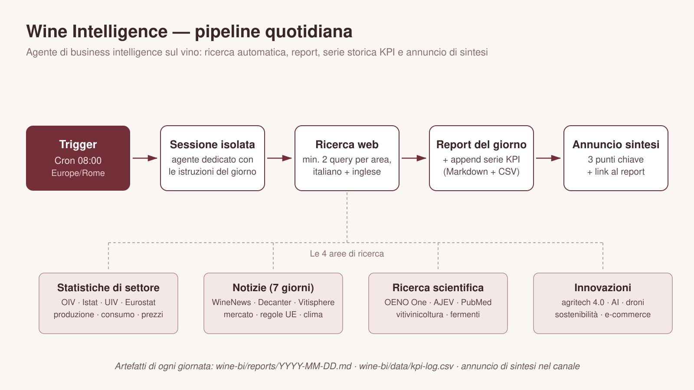

Report più recente
Rotazione geografica di oggi: Cina (giorno 24 mod 10 → indice 4). Seconda area: Italia e i mercati dove il vino cresce ancora, dagli spumanti in Cina al sorpasso del Prosecco in Francia. Limiti: il dato sui consumi cinesi è la serie OIV 2020-2025 ripresa dalla stampa di settore; per l'export italiano in Cina i dati sono quelli UIV su base semestrale e a nove mesi; nessuna nuova pubblicazione scientifica tra il 23 e il 24 novembre.
Sintesi esecutiva
- Cina (1ª area): i consumi di vino sono scesi del 61% tra il 2020 e il 2025 — secondo i dati OIV ripresi dalla stampa di settore, il mercato cinese si è più che dimezzato in cinque anni, complice anche il divieto di alcol negli eventi ufficiali: è la contrazione più profonda tra i grandi mercati mondiali.
- Cina (1ª area): il valore dell'import tiene mentre i volumi calano — nei primi nove mesi del 2026 la Cina ha importato vino per circa 1,17 miliardi di dollari con volumi in calo del 5,2%: si compra meno, ma si compra meglio, e il prezzo medio per litro sale.
- Cina (1ª area): l'unico segmento in crescita è lo spumante — gli import di bollicine sono aumentati del 27,4% a 7,1 milioni di litri nei primi nove mesi, e gli spumanti italiani sono cresciuti del 53,8% in volume: la frizzantezza vince dove il vino fermo arretra.
- Italia (2ª area): il Prosecco ha superato lo Champagne in Francia — il dato più simbolico della settimana arriva dal mercato che sarebbe la casa della concorrenza: le bollicine italiane vendono più di quelle francesi nel loro mercato domestico.
- USA: la debolezza della domanda spiega il 71% delle perdite di categoria — l'analisi retail della settimana attribuisce al calo della domanda gran parte della contrazione, con la distribuzione come fattore secondario.
Statistiche & dati
| Indicatore | Valore | Variazione / Nota | Fonte |
|---|---|---|---|
| Consumi di vino in Cina, 2020-2025 | -61% | La contrazione più profonda tra i grandi mercati | OIV, via Vinetur |
| Import di vino in Cina, primi 9 mesi 2026 | ~1,17 mld $ | Volumi -5,2%: il prezzo medio per litro sale | Vinetur |
| Import di vino in Cina, primo semestre 2026 | 101,4 mln litri | -11% in volume; valore +0,8% | China Briefing |
| Produzione interna di vino in Cina, 2025 | -17,1% | In calo anche la produzione di baijiu | China Briefing |
| Produzione di baijiu in Cina, 2025 | -12,1% | La categoria dominante si ritira con il resto del mercato alcolico | China Briefing |
| Import di spumanti in Cina, primi 9 mesi 2026 | 7,1 mln litri | +27,4% in volume | WineNews |
| Spumanti italiani in Cina, primi 9 mesi 2026 | +53,8% | Crescita in volume sul 2025 | WineNews |
| Export di vino italiano in Cina, primo semestre 2026 | +19,8% (valore) | Dato UIV su base semestrale | Gambero Rosso |
Notizie
- CINA (1ª area): un mercato che si è più che dimezzato e che ora cambia forma — la serie OIV ripresa dalla stampa di settore indica un -61% dei consumi di vino tra il 2020 e il 2025: nessun altro grande mercato ha perso altrettanto. Tra le cause ci sono la frenata dell'economia, il divieto di alcol negli eventi ufficiali — che ha colpito soprattutto il vino di fascia alta regalato e consumato nei banchetti — e un cambio generazionale: i consumatori più giovani cercano occasioni informali, non il rituale del brindisi formale. (Vinetur)
- CINA (1ª area): si importa meno vino, ma si spende di più — nei primi nove mesi del 2026 l'import cinese vale circa 1,17 miliardi di dollari, con volumi in calo del 5,2%: nel primo semestre i litri erano 101,4 milioni (-11%) mentre il valore cresceva dello 0,8%. Il fenomeno è coerente con un mercato che si restringe dal basso e si qualifica in alto: escono i grandi volumi di fascia bassa, resiste il consumo di etichette riconoscibili e di prezzo più alto. (Vinetur, China Briefing)
- CINA (1ª area): lo spumante è l'unica porta rimasta aperta — nei primi nove mesi gli import di bollicine hanno superato i 7 milioni di litri, +27,4%, e gli spumanti italiani sono cresciuti del 53,8% in volume. L'export italiano complessivo verso la Cina è cresciuto del 19,8% a valore nel primo semestre. È un dato importante per la filiera italiana perché sposta il baricentro: non il vino rosso strutturato come simbolo di status, ma la bollicina come bevanda di occasione, più facile da servire, da capire e da posizionare per prezzo. ([WineNews](https://winenews.it/it/gli-spumanti-italiani-brindano-alla-cina-538-in-volume-nei-primi-9- mesi-2026-sul-2025_607488), Gambero Rosso)
- ITALIA (2ª area): il Prosecco supera lo Champagne in Francia — il sorpasso delle bollicine italiane su quelle francesi nel mercato domestico francese è il segno di un cambio di gerarchia nei consumi: prezzo più accessibile, occasioni più informali, riconoscibilità del marchio. Per le cantine italiane è la conferma che la forza del Prosecco non è solo di volume, ma di capacità di occupare spazi che un tempo erano riservati ad altro. (Wine Industry Insight)
- USA: la domanda, non la distribuzione, è il problema principale — l'analisi retail della settimana attribuisce alla debolezza della domanda il 71% delle perdite di categoria, con gli ostacoli distributivi come fattore secondario. È una distinzione che conta: se il problema fosse lo scaffale, basterebbe riconquistarlo; se è il consumatore, servono prodotto e racconto diversi. (Wine Business)
Ricerca & Innovazione
- IWSR: la Cina nel 2026 come mercato «rimodellato» — l'analisi dell'IWSR descrive un 2026 cinese a due velocità: i volumi totali di bevande alcoliche in calo del 4%, il baijiu che continua a perdere e le categorie alternative che occupano spazi nuovi. È il quadro macro in cui va letta la crescita degli spumanti: non un rimbalzo del vino, ma uno spostamento di occasioni. (IWSR)
- Nota di trasparenza: tra il 23 e il 24 novembre non risultano nuove pubblicazioni su OENO One o IVES Technical Reviews; l'ultimo articolo scientifico trattato resta quello del 3 novembre su deficit idrico e defogliazione nel Riesling.
Conoscenza enologica del giorno
Perché in Cina cresce lo spumante e non il vino fermo
La risposta più semplice è il prezzo, ma non basta. Lo spumante ha tre vantaggi strutturali in un mercato che si sta riorganizzando. Il primo è l'occasione d'uso: la bollicina funziona nei brindisi informali, nei locali, nelle feste, mentre il vino rosso strutturato resta legato a un rituale formale che in Cina è stato colpito dai divieti sugli eventi ufficiali. Il secondo è la facilità di servizio: si beve freddo, non richiede decantazione né conoscenza delle annate, e questo riduce la barriera d'ingresso per un consumatore giovane che si avvicina al vino senza tradizione familiare. Il terzo è la zuccherinità: molti spumanti destinati all'export hanno un residuo zuccherino più alto, che incontra il gusto locale più di un bianco secco o di un rosso tannico. A questo si aggiunge un fattore di posizionamento: il Prosecco ha un nome riconoscibile e un prezzo che lo rende acquistabile per una serata, non solo per un'occasione speciale. Il risultato è che in un mercato che perde il 61% in cinque anni c'è un segmento che cresce a doppia cifra — e non è un paradosso, è la conseguenza di un prodotto che si adatta all'occasione. (WineNews, Vinetur)
Fonti
- Vinetur — Younger Chinese drinkers are remaking a wine market that shrank 61% (20/11/2026)
- Vinetur — China paid $1.17 billion for imported wine despite a 5.2% drop in volume (19/11/2026)
- China Briefing — China's Wine Market in 2026: import data for European producers (29/09/2026)
- WineNews — Gli spumanti italiani brindano alla Cina: +53,8% in volume (12/11/2026)
- Gambero Rosso — Il vino italiano conquista nuovi consumatori in Cina (29/10/2026)
- IWSR — China transformed: growth opportunities in a reshaped market
- Wine Industry Insight — rassegna del 24 novembre 2026
- Wine Business — news del 24 novembre 2026
Indicatori chiave — ultimi 7 giorni
| Data | Indicatore | Valore | Unità | Fonte |
|---|---|---|---|---|
| 24 novembre 2026 | consumi vino cina 2020 2025 variazione | -61 | % | oiv |
| 24 novembre 2026 | import spumanti cina 9mesi 2026 variazione volume | 27.4 | % | winenews |
| 24 novembre 2026 | import vino cina 9mesi 2026 | 1.17 | mld_usd | vinetur |
| 24 novembre 2026 | import vino cina 9mesi 2026 variazione volume | -5.2 | % | vinetur |
| 24 novembre 2026 | produzione baijiu cina 2025 variazione | -12.1 | % | china_briefing |
| 24 novembre 2026 | produzione vino cina 2025 variazione | -17.1 | % | china_briefing |
| 24 novembre 2026 | spumanti italiani cina 9mesi variazione volume | 53.8 | % | winenews |
| 22 novembre 2026 | naked wines inventario fy26 | 97.2 | mln_gbp | naked_wines |
| 22 novembre 2026 | naked wines perdita fy26 | -6.6 | mln_gbp | naked_wines |
| 22 novembre 2026 | naked wines ricavi fy26 | 199.1 | mln_gbp | naked_wines |
| 22 novembre 2026 | previsione produzione vino uk 2026 | 10 | mln_bottiglie | six_atmospheres |
| 22 novembre 2026 | produzione vino uk 2025 | 124377 | hl | drinks_business |
| 22 novembre 2026 | vigneti uk 2025 | 1158 | n | winegb |
| 20 novembre 2026 | export vino italia h1 2026 emergenti variazione | 5.9 | % | uiv |
| 20 novembre 2026 | export vino italia h1 2026 usa variazione | -18.4 | % | uiv |
| 20 novembre 2026 | produzione vino mondiale 2025 | 227 | mln_hl | oiv |
| 20 novembre 2026 | produzione vino mondiale 2026 | 225 | mln_hl | oiv |
| 20 novembre 2026 | top100 2026 italiani | 22 | n_vini | wine_spectator |
| 20 novembre 2026 | top100 2026 miglior italiano posizione | 2 | posizione | wine_spectator |
| 20 novembre 2026 | top100 2026 prezzo medio | 68 | usd | wine_spectator |
| 18 novembre 2026 | alentejo vendemmia 2026 | 108 | mln_litri | ccra |
| 18 novembre 2026 | export vino portogallo 2024 | 965.8 | mln_eur | revista_de_vinhos |
| 18 novembre 2026 | export vino ue usa variazione | -15 | % | wine_industry_insight |
| 18 novembre 2026 | perdita export vino ue usa | 940 | mln_eur | wine_industry_insight |
| 18 novembre 2026 | produzione vino portogallo 2026 27 | 6.7 | mln_hl | ivv |
| 18 novembre 2026 | wine spectator woty 2026 punteggio | 95 | punti | wine_spectator |
Serie corrente: 26 righe degli ultimi 7 giorni (dal 17 novembre 2026). Le 235 righe precedenti sono nell'archivio indicatori in fondo alla pagina.
Archivio report — ultimi 10 giorni
- Cina (1ª area): i consumi di vino sono scesi del 61% tra il 2020 e il 2025 — secondo i dati OIV ripresi dalla stampa di settore, il mercato cinese si è più che dimezzato in cinque anni, complice anche il divieto di alcol negli eventi ufficiali: è la contrazione più profonda tra i grandi mercati mondiali.
- Cina (1ª area): il valore dell'import tiene mentre i volumi calano — nei primi nove mesi del 2026 la Cina ha importato vino per circa 1,17 miliardi di dollari con volumi in calo del 5,2%: si compra meno, ma si compra meglio, e il prezzo medio per litro sale.
- Cina (1ª area): l'unico segmento in crescita è lo spumante — gli import di bollicine sono aumentati del 27,4% a 7,1 milioni di litri nei primi nove mesi, e gli spumanti italiani sono cresciuti del 53,8% in volume: la frizzantezza vince dove il vino fermo arretra.
- Regno Unito (1ª area): il 2026 del vino inglese è l'anno del gelo, non quello dei record — secondo l'analisi di Tom Hewson la produzione dovrebbe fermarsi intorno ai 10 milioni di bottiglie, contro i 16,5 milioni del 2025, con il 73% destinato alle bollicine: il gelo primaverile ha colpito proprio le varietà precoci su cui si regge la spumantistica.
- Regno Unito (1ª area): il vigneto però continua a crescere — i dati WineGB contano 1.158 vigneti nel 2025, +4,3% sull'anno prima, e una produzione di 124.377 ettolitri: la superficie piantata non si ritira davanti a un'annata difficile.
- Regno Unito (2ª area): Naked Wines chiude il bilancio con ricavi a 199,1 milioni di sterline, -20,4% — perdita di 6,6 milioni, ma EBITDA adjusted positivo a 7,6 milioni e inventario ridotto di 10,4 milioni: il direct-to-consumer online si sta normalizzando dopo l'euforia post-pandemia.
- Mondo (2ª area): la prima stima OIV colloca la produzione 2026 intorno ai 225 milioni di ettolitri — circa 30 miliardi di bottiglie, in leggero calo rispetto ai 227 milioni del 2025: un terzo anno consecutivo sotto la media storica, con l'offerta che si restringe lentamente mentre le giacenze restano alte.
- Italia (1ª area): 22 vini italiani nella Top 100 di Wine Spectator, con il Barbaresco al secondo posto — il Rabajà dei Produttori del Barbaresco è il miglior italiano in classifica, seguito al quarto posto dal Brunello di Caparzo; Antinori piazza tre etichette e viene definita «eroe dei due mondi».
- Italia (1ª area): l'export tiene nei mercati emergenti ma perde quasi un quinto negli USA — nel primo semestre 2026 le vendite negli Stati Uniti calano del 18,4%, mentre tredici mercati emergenti crescono del 5,9%: il saldo resta negativo, ma la geografia del mercato si sta spostando.
- Portogallo (1ª area): l'Alentejo torna a circa 108 milioni di litri dopo l'annata disastrosa del 2025 — la Commissione vitivinicola regionale indica un raccolto in netta ripresa, ma su una base che l'anno prima era crollata: il Paese nel suo complesso è stimato a 6,7 milioni di ettolitri (+12%), con Douro +25% e Alentejo +15%.
- Portogallo (1ª area): l'export vale 965,8 milioni di euro e cresce del 4,5%, ma il prezzo medio per litro scende — gli Stati Uniti sono il secondo mercato a valore e il Brasile si sta avvicinando, mentre i vini a denominazione crescono a volume nel Regno Unito: il modello portoghese funziona sul valore, non sui litri.
- Mondo (2ª area): Wine Spectator incorona un Cabernet di Napa come vino dell'anno 2026 — il Paul Hobbs Coombsville 2023 ha 95 punti, 120 dollari di prezzo e 8.730 casse prodotte: la classifica completa è uscita lunedì 16 novembre, con 32 nuove entrate e un peso crescente delle etichette accessibili.
- Spagna (1ª area): la Rioja si prepara a un'eccedenza di 30 milioni di litri — la vendemmia 2026 della denominazione più nota del Paese lascia sul mercato un surplus che, secondo il sindacato dei produttori, deprimerà ulteriormente prezzi già bassi: è il paradosso di un'annata qualitativamente buona che arriva su una domanda ferma.
- Spagna (1ª area): la campagna 2025/26 si è chiusa con export a -9,5% in volume e -6,1% in valore — e con le giacenze in crescita del 21,9%: il Paese resta il primo esportatore mondiale di vino sfuso, ma il canale principale perde volume proprio quando le scorte si accumulano.
- Spagna (1ª area): la produzione 2026 tiene, in controtendenza europea — la stima DG Agri indica 37,5 milioni di ettolitri, mentre l'Unione nel suo complesso è vista in calo del 4% secondo Copa-Cogeca: la Spagna resta il primo produttore europeo davanti a Italia e Francia.
5 report degli ultimi 10 giorni (dal 14 novembre 2026). I 30 report precedenti sono nell'archivio storico.
Archivio storico report
🗂 30 report più vecchi di 10 giorni (prima del 14 novembre 2026) — apri per sfogliare
Archivio indicatori
📊 235 righe della serie storica più vecchie di 7 giorni (prima del 17 novembre 2026) — apri per consultare
| Data | Indicatore | Valore | Unità | Fonte |
|---|---|---|---|---|
| 16 novembre 2026 | export vino spagna 2025 26 variazione valore | -6.1 | % | interempresas |
| 16 novembre 2026 | export vino spagna 2025 26 variazione volume | -9.5 | % | interempresas |
| 16 novembre 2026 | produzione vino ue 2026 variazione | -4 | % | copa_cogeca |
| 16 novembre 2026 | scorte vino spagna variazione | 21.9 | % | interempresas |
| 16 novembre 2026 | surplus vino rioja 2026 | 30 | mln_litri | drinks_business |
| 16 novembre 2026 | vendemmia spagna 2026 | 37.5 | mln_hl | dg_agri |
| 12 novembre 2026 | duty vino rosso 145 dal 2023 | 49 | % | wsta |
| 12 novembre 2026 | duty vino uk 2026 | 30.62 | gbp_per_lpa | db_govuk |
| 12 novembre 2026 | duty vino uk 2027 | 32.01 | gbp_per_lpa | db_govuk |
| 12 novembre 2026 | export vino ue 8mesi 2026 | 10.6 | mld_eur | uiv |
| 12 novembre 2026 | produzione vino uk 2025 | 124377 | hl | drinks_business |
| 12 novembre 2026 | uprating rpi 2027 | 4.55 | % | govuk |
| 12 novembre 2026 | volumi vino uk variazione 3anni | -8 | % | wsta |
| 9 novembre 2026 | alcol free germania 2025 variazione volume | 25 | % | dwi_nielseniq |
| 9 novembre 2026 | alcol free quota vino germania | 1.5 | % | dwi |
| 9 novembre 2026 | export vino germania 2025 variazione valore | -2 | % | meininger |
| 9 novembre 2026 | export vino germania 2025 variazione volume | 1 | % | meininger |
| 9 novembre 2026 | vendemmia franconia 2026 | 326 | migliaia_hl | dwi |
| 9 novembre 2026 | vendemmia germania 2026 | 7.7 | mln_hl | dwi |
| 9 novembre 2026 | vendemmia germania media decennale | 8.7 | mln_hl | dwi |
| 8 novembre 2026 | export vino italia primo semestre 2026 variazione | -6.2 | % | uiv |
| 8 novembre 2026 | produzione vino douro 2026 27 variazione | 25 | % | vinha |
| 8 novembre 2026 | produzione vino portogallo 2025 26 | 5.9 | mln_hl | ivv |
| 8 novembre 2026 | produzione vino portogallo 2026 27 | 6.7 | mln_hl | vinha_ivv |
| 8 novembre 2026 | vendemmia francia 2026 dgagri | 33.8 | mln_hl | dg_agri |
| 8 novembre 2026 | vendemmia italia 2026 dgagri | 41.1 | mln_hl | dg_agri |
| 8 novembre 2026 | vendemmia spagna 2026 dgagri | 37.5 | mln_hl | dg_agri |
| 1 novembre 2026 | export vino usa canada 2025 | 103 | mln_usd | usda_wine_institute |
| 1 novembre 2026 | export vino usa canada 2025 variazione | -78 | % | usda_wine_institute |
| 1 novembre 2026 | perdita cumulata export usa canada | 522 | mln_usd | wine_institute |
| 1 novembre 2026 | quota canada export vino usa 2025 | 12 | % | wine_institute |
| 1 novembre 2026 | vendemmia ue 2026 | 137.4 | mln_hl | commissione_ue |
| 1 novembre 2026 | vendite totali vino usa 2025 | 115 | mld_usd | wine_institute |
| 31 ottobre 2026 | porzioni alcol usa 2025 variazione | -4 | % | iwsr |
| 31 ottobre 2026 | top100 cellar 2026 barolo | 6 | n_vini | wineenthusiast |
| 31 ottobre 2026 | top100 cellar 2026 italia | 25 | n_vini | wineenthusiast |
| 31 ottobre 2026 | vino mondo volume 2025 2035 variazione | -14 | % | iwsr |
| 31 ottobre 2026 | vino mondo volume 2025 variazione | -5 | % | iwsr |
| 31 ottobre 2026 | vino usa volume 2025 variazione | -6 | % | iwsr |
| 30 ottobre 2026 | export vino ue 2023 | 17.9 | mld_eur | ceev.eu |
| 30 ottobre 2026 | giacenze mosti italia 30set 2026 | 12.8 | mln_hl | masaf_icqrf |
| 30 ottobre 2026 | giacenze vino italia 30set 2026 | 41.04 | mln_hl | masaf_icqrf |
| 30 ottobre 2026 | previsione volume vino 2025 2035 | -14 | % | iwsr |
| 30 ottobre 2026 | quota ue produzione vino mondiale | 64 | % | ceev.eu |
| 30 ottobre 2026 | vinitaly usa 2026 operatori | 3000 | operatori | prnewswire |
| 30 ottobre 2026 | vinitaly usa 2026 variazione presenze | 36 | % | prnewswire |
| 30 ottobre 2026 | volume vino mondiale 2025 variazione | -5 | % | iwsr |
| 27 ottobre 2026 | champagne shipments 12m giugno2026 | 107.1 | mln_bottiglie | drinks-intel |
| 27 ottobre 2026 | export vino italiano extraue q3 2026 variazione valore | +8 | % | beverfood |
| 27 ottobre 2026 | export vino italiano usa 2025 | 1.75 | mld_eur | winenews.it |
| 27 ottobre 2026 | export vino italiano usa q3 2026 variazione valore | +17 | % | beverfood |
| 27 ottobre 2026 | import vino usa primo semestre 2026 variazione | -25.2 | % | winenews.it |
| 27 ottobre 2026 | superficie vigneto sudafrica 2026 | 85525 | ha | sawine.co.za |
| 27 ottobre 2026 | vendemmia sudafrica 2026 | 1.37 | mln_t | wosa_news |
| 27 ottobre 2026 | vendemmia sudafrica 2026 vs media 5anni | +4 | % | ciatti_company |
| 24 ottobre 2026 | export vino australia 12m giugno2026 | 2.30 | mld_AUD | wineaustralia.com |
| 24 ottobre 2026 | export vino australia canada valore | 188 | mln_AUD | wineaustralia_export_report |
| 24 ottobre 2026 | export vino australia variazione valore | -7 | % | wineaustralia.com |
| 24 ottobre 2026 | produzione mondiale vino 2025 | 227 | mln_hl | oiv.int |
| 24 ottobre 2026 | vendemmia australia 2026 | 1.27 | mln_t | wineaustralia.com |
| 24 ottobre 2026 | vendemmia australia 2026 variazione | -19 | % | wineaustralia.com |
| 24 ottobre 2026 | vendemmia australia 2026 vs media 10anni | -25 | % | wineaustralia.com |
| 24 ottobre 2026 | vigneto mondiale 2025 | 7.0 | mln_ha | oiv.int |
| 23 ottobre 2026 | import vino cina 2025 | 1.4 | mld_usd | usda_fas |
| 23 ottobre 2026 | import vino cina 2025 variazione | -11 | % | usda_fas |
| 23 ottobre 2026 | vendemmia francia 2026 | 35 | mln_hl | agreste_franceagrimer |
| 23 ottobre 2026 | vendemmia francia 2026 variazione media 5anni | -14 | % | agreste_franceagrimer |
| 23 ottobre 2026 | vendemmia germania 2026 | 7.73 | mln_hl | dwi_wein.plus |
| 23 ottobre 2026 | vendemmia italia 2026 | 41.1 | mln_hl | uiv_assoenologi_ismea |
| 23 ottobre 2026 | vendemmia spagna 2026 | 34 | mln_hl | wine-intelligence.com |
| 23 ottobre 2026 | vendemmia ue 2026 | 137.4 | mln_hl | vinetur |
| 21 ottobre 2026 | export vino usa canada 2025 variazione | -78 | % | wineinstitute.org |
| 21 ottobre 2026 | quota produzione vino esportata 2025 | 43 | % | anderson_jwe |
| 21 ottobre 2026 | quota vino consumo mondiale alcol 2023 | 12.5 | % | anderson_jwe |
| 21 ottobre 2026 | superficie vitata mondiale 2023 | 4.5 | mln_ha | anderson_jwe |
| 21 ottobre 2026 | vendemmia sonoma 2026 variazione minima | -35 | % | sonomawinegrape.org |
| 21 ottobre 2026 | vendite vino usa 2026 variazione | -3.6 | % | shanken_impact_databank |
| 21 ottobre 2026 | vigneti california in piedi 1ago2026 | 439115 | acri | cawg_landiq |
| 21 ottobre 2026 | vigneti california rimossi 12mesi | 47229 | acri | cawg_landiq |
| 18 ottobre 2026 | aziende vino familiari in passaggio generazionale 2025 | 39.2 | % | vinetur.com |
| 18 ottobre 2026 | candidature aiuto douro 2026 | 425 | numero | jornaleconomico.sapo.pt |
| 18 ottobre 2026 | export vino italia extra ue gen set 2026 | 3.3 | mld_eur | unioneitalianavini.it |
| 18 ottobre 2026 | export vino italia extra ue q3 2026 variazione | 8 | % | unioneitalianavini.it |
| 18 ottobre 2026 | export vino italia usa q3 2026 variazione | 17 | % | unioneitalianavini.it |
| 18 ottobre 2026 | produzione vino portogallo 2026 27 | 6.7 | mln_hl | ivv.gov.pt |
| 18 ottobre 2026 | produzione vino portogallo 2026 27 variazione | 12 | % | ivv.gov.pt |
| 18 ottobre 2026 | scorte vino california 2026 | 22 | mesi | wine-searcher.com |
| 17 ottobre 2026 | import vino cina h1 2026 | 101.4 | mln_litri | china-briefing.com |
| 17 ottobre 2026 | import vino cina h1 2026 variazione | -11 | % | china-briefing.com |
| 17 ottobre 2026 | liv ex fine wine 100 settembre 2026 | 1.1 | % | vinumfinewines.com |
| 17 ottobre 2026 | produzione vino italia 2026 | 41.1 | mln_hl | vinetur.com |
| 17 ottobre 2026 | produzione vino spagna 2026 | 37.6 | mln_hl | vinetur.com |
| 17 ottobre 2026 | produzione vino ue 2026 | 137.4 | mln_hl | vinetur.com |
| 17 ottobre 2026 | scorte totali italia 30set 2026 | 62.7 | mln_hl | wineitaly24.com |
| 17 ottobre 2026 | scorte vino italia 30set 2026 | 41.0 | mln_hl | wineitaly24.com |
| 8 ottobre 2026 | budget promozione export vino italia 2026 | 19 | mln_eur | vinetur.com |
| 8 ottobre 2026 | impegno ricerca red blotch napa fase1 | 2.5 | mln_usd | wineindustryadvisor.com |
| 8 ottobre 2026 | liv ex acquirenti usa share settimanale | 45 | % | liv-ex.com |
| 8 ottobre 2026 | liv ex bordeaux share settimanale | 37.4 | % | liv-ex.com |
| 8 ottobre 2026 | vendemmia alentejo 2026 yoy | 15 | % | ivv.gov.pt |
| 8 ottobre 2026 | vendemmia douro 2026 yoy | 25 | % | ivv.gov.pt |
| 8 ottobre 2026 | vendemmia prosecco docg avanzamento 15set | 90 | % | vinetur.com |
| 8 ottobre 2026 | vendemmia temecula anticipo pinot grigio | 4 | settimane | blog.temeculawines.org |
| 7 ottobre 2026 | export vino sud africa 2025 | 264 | mln_litri | harpers.co.uk |
| 7 ottobre 2026 | export vino sud africa 2025 variazione | -2.4 | % | harpers.co.uk |
| 7 ottobre 2026 | produzione vino francia 2026 stima | 34 | mhl | gamberorosso.it |
| 7 ottobre 2026 | produzione vino spagna 2026 stima | 34 | mhl | gamberorosso.it |
| 7 ottobre 2026 | raccolto uva sud africa 2026 | 1.37 | mln_t | harpers.co.uk |
| 7 ottobre 2026 | resa franconia 2026 | 55 | hl_per_ha | vinetur.com |
| 7 ottobre 2026 | uk alcohol duty uprating 2026 | 3.66 | % | gov.uk |
| 7 ottobre 2026 | vendemmia franconia 2026 | 320000 | hl | vinetur.com |
| 1 ottobre 2026 | champagne 2026 variazione yoy | -48 | % | journaily.com |
| 1 ottobre 2026 | estirpazioni vigneti california 2024 25 | 40000 | acri | cerescourier.com |
| 1 ottobre 2026 | export vino california canada var 2024 25 | -78 | % | kcra.com |
| 1 ottobre 2026 | giacenze vino italia luglio 2026 | 42.6 | mhl | ottopagine.it |
| 1 ottobre 2026 | giacenze vino puglia campagna precedente | 4.28 | mhl | brindisireport.it |
| 1 ottobre 2026 | import vino cina valore usa 2026 | 1.4 | mld_usd | fas.usda.gov |
| 1 ottobre 2026 | produzione vino francia 2026 | 33.9 | mhl | thegrapereset.com |
| 1 ottobre 2026 | produzione vino puglia 2025 | 8.4 | mhl | foggiatoday.it |
| 28 settembre 2026 | crush uva california 2025 | 2.62 | mln_tons | terrainag.com |
| 28 settembre 2026 | export vino francia h1 2026 valore yoy | -2.2 | % | vinetur.com |
| 28 settembre 2026 | export vino italia h1 2026 valore | 3.6 | mld_eur | italiaatavola.net |
| 28 settembre 2026 | export vino italia h1 2026 valore yoy | -6.2 | % | italiaatavola.net |
| 28 settembre 2026 | produzione vino portogallo 2026 | 6.7 | mhl | infowine.com |
| 28 settembre 2026 | produzione vino portogallo 2026 yoy | 12 | % | infowine.com |
| 28 settembre 2026 | uva vino california 2026 senza compratore | 50 | % | vinetur.com |
| 28 settembre 2026 | vendite retail vino usa var 4sett ago2026 | -4.1 | % | vinetur.com |
| 27 settembre 2026 | export agricoli sudafrica h1 2026 yoy | 11 | % | ebnewsdaily.co.za |
| 27 settembre 2026 | export vino sudafrica 2025 volume | 264 | mln_litri | thefarmersjournal.com |
| 27 settembre 2026 | fatturato bodegas spagna 2026 | 8566 | mln_eur | vinetur.com |
| 27 settembre 2026 | gemme champagne distrutte gelo 2026 | 40 | % | terredevins.com |
| 27 settembre 2026 | import vino uk h1 2026 volume | -22 | % | vinetur.com |
| 27 settembre 2026 | liv ex fine wine 100 agosto 2026 mom | 0.7 | % | vinumfinewines.sg |
| 27 settembre 2026 | resa champagne 2026 | 8800 | kg_per_ha | terredevins.com |
| 27 settembre 2026 | turnaround container sudafrica set 2026 | 7.7 | giorni | portstrategy.com |
| 23 settembre 2026 | bottle weight accord target 2026 | 420 | g | swroundtable.org |
| 23 settembre 2026 | consumo vino spagna gen mag 2026 yoy | -7.3 | % | lagacetadelvino.com |
| 23 settembre 2026 | import vino usa h1 2026 valore yoy | -25.2 | % | manzanoswinesusa.com |
| 23 settembre 2026 | mercato vino no alcol 2026 | 3.12 | mld_usd | businessresearchinsights.com |
| 23 settembre 2026 | produzione vino francia 2026 | 33.9 | mhl | thegrapereset.com |
| 23 settembre 2026 | produzione vino francia 2026 yoy | -6 | % | theguardian.com |
| 23 settembre 2026 | produzione vino spagna 2026 prevista | 30 | mhl | agronewscastillayleon.com |
| 22 settembre 2026 | alcohol duty uk gettito mag lug 2026 | 2936 | mln_gbp | gov.uk |
| 22 settembre 2026 | export vino inglese 2025 yoy | 35 | % | winegb.co.uk |
| 22 settembre 2026 | export vino italia agosto 2026 | 634 | mln_eur | inumeridelvino.it |
| 22 settembre 2026 | export vino italia agosto 2026 valore yoy | -2.6 | % | inumeridelvino.it |
| 22 settembre 2026 | giacenze vino italia vigilia vendemmia 2026 | 42.6 | mhl | agronotizie.imagelinenetwork.com |
| 22 settembre 2026 | liv ex turnover agosto 2026 yoy | 15 | % | vinumfinewines.com |
| 22 settembre 2026 | produzione vino uk 2025 | 124377 | hl | thedrinksbusiness.com |
| 22 settembre 2026 | vino fermo uk volumi variazione da 2022 23 | -8 | % | thedrinksbusiness.com |
| 21 settembre 2026 | aste fine wine sothebys H1 2026 | 49.2 | mln_usd | vinetur.com |
| 21 settembre 2026 | bevitori vino usa adulti | 76 | mln | hwy29creative.com |
| 21 settembre 2026 | consumo vino mondiale 2025 | 208 | mhl | forbes.com |
| 21 settembre 2026 | consumo vino mondiale 2025 yoy | -2.7 | % | forbes.com |
| 21 settembre 2026 | dtc usa 2025 volume yoy | -15 | % | sovos.com |
| 21 settembre 2026 | liv ex fine wine 100 ago2026 | 0.7 | % | vinumfinewines.com |
| 21 settembre 2026 | produzione vino mondiale 2025 | 227 | mhl | vinovonk.com |
| 21 settembre 2026 | spesa consumatori usa vino 2025 | 115 | mld_usd | commercial.bmo.com |
| 19 settembre 2026 | export vino fermo germania 2025 valore | 377 | mln_eur | deutscher-weinbauverband.de |
| 19 settembre 2026 | export vino fermo germania 2025 volume | 1.203 | mhl | deutscher-weinbauverband.de |
| 19 settembre 2026 | mercato viticoltura precisione usa 2026 | 2.85 | mld_usd | vinetur.com |
| 19 settembre 2026 | produzione vino germania 2025 | 7.55 | mhl | destatis.de |
| 19 settembre 2026 | produzione vino germania 2025 yoy | -2.6 | % | destatis.de |
| 19 settembre 2026 | valore agricolo sonoma 2025 yoy | -10 | % | winebusiness.com |
| 19 settembre 2026 | valore raccolta winegrape sonoma 2025 | 523 | mln_usd | bohemian.com |
| 19 settembre 2026 | vendemmia germania 2026 inizio anticipo | 1 | settimane | deutscheweine.de |
| 18 settembre 2026 | export spumanti italiani H1 2026 | 1 | mld_eur | winenews.it |
| 18 settembre 2026 | export spumanti italiani H1 2026 volume | 252.2 | mln_l | winenews.it |
| 18 settembre 2026 | export vino italiano usa gen-lug2026 valore yoy | -11 | % | unioneitalianavini.it |
| 18 settembre 2026 | export vino italiano usa luglio2026 valore yoy | quasi_10 | % | unioneitalianavini.it |
| 18 settembre 2026 | import vino usa H1 2026 valore yoy | -25.2 | % | thedrinksbusiness.com |
| 18 settembre 2026 | import vino usa H1 2026 volume yoy | -16.8 | % | thedrinksbusiness.com |
| 18 settembre 2026 | mercato packaging vino 2026 | 7.32 | mld_usd | towardspackaging.com |
| 18 settembre 2026 | prezzo medio import vino usa H1 2026 | 4.52 | eur_l | thedrinksbusiness.com |
| 18 settembre 2026 | sostegno governo portogallo douro 2026 | 12 | mln_eur | aman-alliance.org |
| 18 settembre 2026 | stima vendemmia douro 2026 | 1.4 | mhl | theportugalbrief.pt |
| 18 settembre 2026 | stima vendemmia douro 2026 yoy | 25 | % | theportugalbrief.pt |
| 18 settembre 2026 | stima vendemmia francia 2026 | 33.8 | mhl | winenews.it |
| 18 settembre 2026 | stima vendemmia portogallo 2026 | 6.7 | mhl | theportugalbrief.pt |
| 18 settembre 2026 | stima vendemmia portogallo 2026 yoy | 12 | % | theportugalbrief.pt |
| 18 settembre 2026 | vendemmia portogallo 2026 27 | 6.7 | mhl | vinha.co.uk |
| 18 settembre 2026 | vendemmia portogallo 2026 27 yoy | 12 | % | vinha.co.uk |
| 16 settembre 2026 | export vino italiano canada H1 2026 | 208.6 | mln_eur | winenews.it |
| 16 settembre 2026 | export vino spagna H1 2026 valore yoy | -10.2 | % | wine-intelligence.com |
| 16 settembre 2026 | export vino spagna H1 2026 volume yoy | -20.2 | % | wine-intelligence.com |
| 16 settembre 2026 | mercato precision viticulture 2026 | 6.82 | mld_usd | fortunebusinessinsights.com |
| 16 settembre 2026 | prezzo uva cava 2026 minimo | 0.25 | eur_kg | wine-searcher.com |
| 16 settembre 2026 | stima vendemmia spagna 2026 | 31.5 | mhl | the-silent-luxury.com |
| 16 settembre 2026 | vendemmia rias baixas 2026 | 49 | mln_kg | vinetur.com |
| 16 settembre 2026 | vendemmia rioja 2026 uva raccolta | 225.5 | mln_kg | riojawine.com |
| 15 settembre 2026 | crush uva vino australia 2026 | 1.27 | mln_ton | wineaustralia.com |
| 15 settembre 2026 | crush uva vino australia 2026 yoy | -19 | % | wineaustralia.com |
| 15 settembre 2026 | danno dazi usa15 vino italiano | 317 | mln_eur | unioneitalianavini.it |
| 15 settembre 2026 | export vino australia giu2026 | 2.30 | mld_aud | wineaustralia.com |
| 15 settembre 2026 | export vino australia giu2026 yoy | -7 | % | wineaustralia.com |
| 15 settembre 2026 | export vino australia volume giu2026 | 598 | mln_l | thedrinksbusiness.com |
| 15 settembre 2026 | valore vendemmia australia 2026 | 837 | mln_aud | wineaustralia.com |
| 15 settembre 2026 | valore vendemmia australia 2026 yoy | -26 | % | wineaustralia.com |
| 14 settembre 2026 | champagne produzione 2026 vs 2025 | -49 | % | reuters.com |
| 14 settembre 2026 | export mondiale vino 2025 | 94.8 | mhl | reuters.com |
| 14 settembre 2026 | export mondiale vino 2025 yoy | -4.7 | % | reuters.com |
| 14 settembre 2026 | export vino italiano 5m 2026 | sotto_3 | mld_eur | gamberorosso.it |
| 14 settembre 2026 | mercato precision viticulture 2026 | 6.82 | mld_usd | fortunebusinessinsights.com |
| 14 settembre 2026 | produzione francia 2026 stima | 33.9 | mhl | theguardian.com |
| 13 settembre 2026 | champagne produzione 2026 vs 2025 | -49 | % | reuters.com |
| 13 settembre 2026 | consumo mondiale vino 2025 | 208 | mhl | oiv.int |
| 13 settembre 2026 | export vino italiano T1 2026 | 2.34 | mld_eur | unioneitalianavini.it |
| 13 settembre 2026 | export vino italiano T1 2026 yoy | -6.8 | % | unioneitalianavini.it |
| 13 settembre 2026 | export vino italiano usa T1 2026 yoy | -15.4 | % | liberacr.it |
| 13 settembre 2026 | produzione francia 2026 stima | 33.9 | mhl | theguardian.com |
| 12 settembre 2026 | champagne resa commerciale 2026 | 8800 | kg_ha | winecap.com |
| 12 settembre 2026 | export vino italiano S1 2026 usa valore yoy | -14.1 | % | askanews.it |
| 12 settembre 2026 | export vino italiano S1 2026 valore yoy | -6.2 | % | vinonews24.it |
| 12 settembre 2026 | export vino italiano S1 2026 volume yoy | -4 | % | vinonews24.it |
| 12 settembre 2026 | import vino cina 2025 | 1.4 | mld_usd | fas.usda.gov |
| 12 settembre 2026 | produzione vino regno unito 2025 | 124377 | hl | thedrinksbusiness.com |
| 11 settembre 2026 | consumi vino usa T1 2026 volume yoy | -8.3 | % | winenews.it |
| 11 settembre 2026 | crush uve california 2025 | 2.6 | mln_ton | farmprogress.com |
| 11 settembre 2026 | gdo vino spumante italia T2 2026 yoy | -2 | % | inumeridelvino.it |
| 11 settembre 2026 | iwc2026 medaglie francia | 849 | medaglie | vinetur.com |
| 11 settembre 2026 | spesa consumer vino usa 2025 | 115 | mld_usd | winebusiness.com |
| 11 settembre 2026 | vigneti estirpati california 2025 | 38 | mila_acri | nytimes.com |
| 11 settembre 2026 | volume mercato vino usa 2025 yoy | -4 | % | bmo_via_winebusiness.com |
| 10 settembre 2026 | grant napa green sostenibilita 2026 | 3 | mln_usd | wineindustryadvisor.com |
| 10 settembre 2026 | import mondiale vino T1 2026 valore | 7.4 | mld_eur | winenews.it |
| 10 settembre 2026 | livex valore scambi gen2026 vs dic2025 | 21.7 | % | vin-x.com |
| 10 settembre 2026 | stima produzione vino castilla la mancha 2026 27 | 19 | mhl | democrata.es |
| 10 settembre 2026 | variazione import mondiale vino T1 2026 yoy | -7.5 | % | winenews.it |
| 9 settembre 2026 | consumo mondiale vino 2025 | 208 | mhl | oiv.int |
| 9 settembre 2026 | export vino italiano extraUE gen-apr2026 yoy | -8.5 | % | unioneitalianavini.it |
| 9 settembre 2026 | export vino italiano gen-feb2026 yoy | -13.3 | % | winemeridian.com |
| 9 settembre 2026 | giacenze vino italia 31luglio2026 | 42.6 | mhl | agronotizie.imagelinenetwork.com |
| 9 settembre 2026 | produzione mondiale vino 2025 | 227 | mhl | oiv.int |
| 9 settembre 2026 | stima produzione francia 2026 | 33.9 | mhl | thegrapereset.com |
| 9 settembre 2026 | variazione giacenze vino italia yoy | 6.9 | % | vinetur.com |
Come funziona
Ogni mattina alle 08:00 un agente autonomo esegue ricerche web in italiano e inglese su quattro aree tematiche, scrive il report del giorno, aggiunge gli indicatori quantitativi alla serie storica e rigenera questa pagina.
- Statistiche di settore — produzione, consumo, scambi, prezzi (OIV, CEEV, Istat, UIV, Eurostat, AgriData UE)
- Notizie — aziende, mercato, regolamentazione UE, dazi, clima (ultimi 7 giorni; WineNews, The Drinks Business, Vinetur, Teatro Naturale)
- Ricerca scientifica — viticoltura ed enologia (OENO One, IVES Technical Reviews, AJEV, PubMed, Google Scholar)
- Archivi — i report più vecchi di 10 giorni e gli indicatori più vecchi di 7 giorni restano consultabili nelle sezioni Archivio storico e Archivio indicatori
- Innovazioni — agritech 4.0, AI, droni e sensori, sostenibilità
Ogni dato riportato rimanda alla fonte originale: se un dato non è verificabile viene marcato come "dato non confermato".
